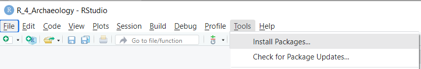

# load libraries
library(dplyr)
library(ggplot2)
library(pastecs)
# force non scientific formatting of numbers
options(scipen = 999)
options(digits=3)Importing libraries and data
Ronald Visser ![]()
Alex Brandsen
Importing Libraries and Data
We won’t need the hello world line anymore, so delete it. Now copy the following code at the top of your file:
Tip
Using the hashtag symbol ( # ) adds a comment in the code that won’t be executed by R
This will load some libraries (pre-configured tool-collections, see https://www.statmethods.net/interface/packages.html for an explanation) that are required to complete the rest of the tutorial. Also, we set some options to force non scientific formatting of numbers.
Tip : From now on, any code blocks in this tutorial need to be copied into your script, we won’t specifically tell you to each time. Code blocks are pieces of code on their own line(s), recognisable by this font.
Now Source the script (CTRL + SHIFT + S) with just these lines of code, to see if the libraries are loaded.
Tip
If you get an error saying “There is no package xxx”, this means that your installation of R doesn’t have this library installed yet. Copy and paste install.packages("dplyr") into the Console and press enter, this will install the library. Repeat this for all 3 libraries (dplyr, ggplot2, pastecs). You only need to install a package once, but you need to reload it every time you start a new project.
Installing can also be done via the Tools menu in RStudio:
Before we can do any analysis, we need to import some data. We will be using find information from the Cuijk-Heeswijk excavation in the Netherlands.(Roessingh and Vanneste, n.d., 2009) First, download the example data here: zip-file with data
Then unzip this file, this should give you a folder called data. Place this folder in your RStudio project folder using your computer’s file manager. data should now appear in the file manager (bottom right) of RStudio.
Now, we can import the .csv files that are in the data folder by using the read.csv function. The VONDST.csv file contains information on which context a finds bag comes from, while the SPLITS2.csv file contains more detailed information about the contents of a finds bag, such as number of finds, weight and also the type of find (using ABR Dutch archaeology thesaurus codes: https://thesaurus.cultureelerfgoed.nl/).
The first thing we do is read the csv files into R variables:
# read CSV files and store in variables
finds <- read.csv("data/VONDST.csv", row.names=NULL)
bag_contents <- read.csv("data/SPLITS2.csv")Now, source the script (see shortcuts overview), you should see the variables bag_contents and finds in the Environment tab (top right panel). You now have a copy of your CSV files in the R environment, any changes you make to this data won’t be saved to your CSV files, so you can experiment without worrying about changing your original dataset.
Tip : Whenever you copy code, try to understand what the code does, and if you have questions please ask one of your supervisors. You can also put a question mark( ? ) in front of any line to get information about the line in the Help tab.
If you click on the blue circle with white arrow next to either bag_contents or finds, you can see the data structure, but this is not very easy to view. Click on the table icon to the right of bag_contents to open the variable as a table, this is a lot more convenient. Close the table by pressing the ‘x’ next to the bag_contents tab.
You can also view the top 10 rows of the table in the Console by doing:
# view top 10 rows of bag_contents
head(bag_contents, n=10) OPGR_ID VONDSTNR INHOUD ABR_ALG ABR_SPECSVU AANTAL GEWICHT DOOSNR LOKATIE
1 CUIK3-07 1 VST SXX SVU 1 40.4 1
2 CUIK3-07 4 AWH KER AWH 3 6.2 3
3 CUIK3-07 6 AWH KER AWH 11 23.8 3
4 CUIK3-07 6 VST SXX SVU 1 2.2 1
5 CUIK3-07 7 AWH KER AWH 3 19.8 3
6 CUIK3-07 7 BW KER BOUWMAT 1 165.2 6
7 CUIK3-07 7 NS SXX SXX 1 2.4 2
8 CUIK3-07 9 BW KER BOUWMAT 2 36.1 6
9 CUIK3-07 10 AWH KER AWH 11 35.4 3
10 CUIK3-07 11 AWG KER AWG 1 4.8 4
BEWAARD. OPMERKING INVDATUM BEWAARCATEGORIE
1 FALSE vuursteen 1-10-2007
2 FALSE 1-10-2007
3 FALSE 1-10-2007
4 FALSE vuursteen 1-10-2007
5 FALSE 1-10-2007
6 FALSE 1-10-2007
7 FALSE ONBEWERKT 1-10-2007
8 FALSE 1-10-2007
9 FALSE 1-10-2007
10 FALSE 1-10-2007
Tip
Instead of pressing the Source button and running the entire script, you can also run just parts of your script, by selecting a number of lines and using the Run button (or pressing CTRL + ENTER). You can also just place your cursor on a line and press Run, try this now with the head(…) line above! But be aware that any variables you use must have been run before and be visible in the Environment tab.
References
Roessingh, W., and H. C. G. M. Vanneste. 2009. Cuijk Heeswijkse Kampen. De Archeologische Opgraving van Vindplaats 4 En 7. ADC Rapport 1173. Amersfoort: ADC Archeoprojecten.
———. n.d. “Cuijk Heeswijkse Kampen vp 7 DO.” https://doi.org/10.17026/DANS-ZK2-XMRQ.